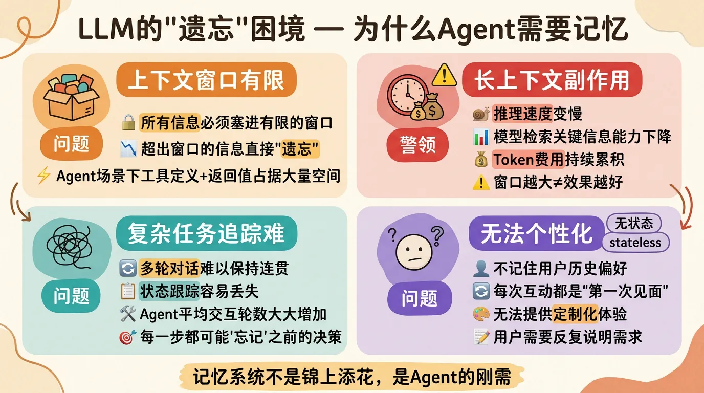
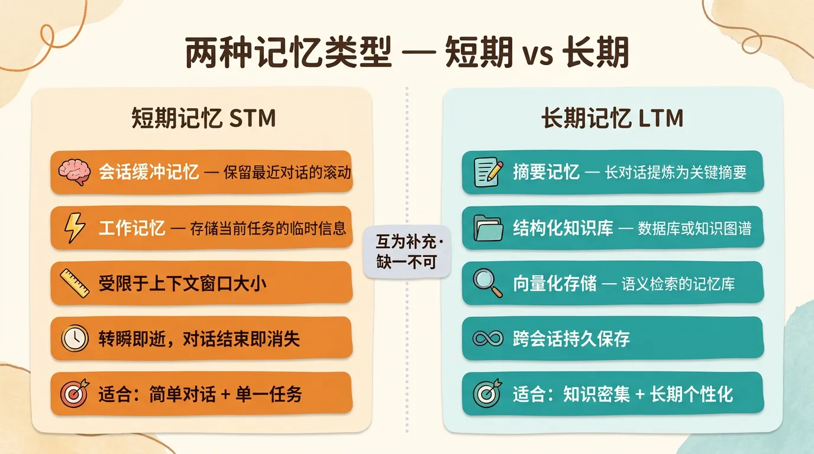
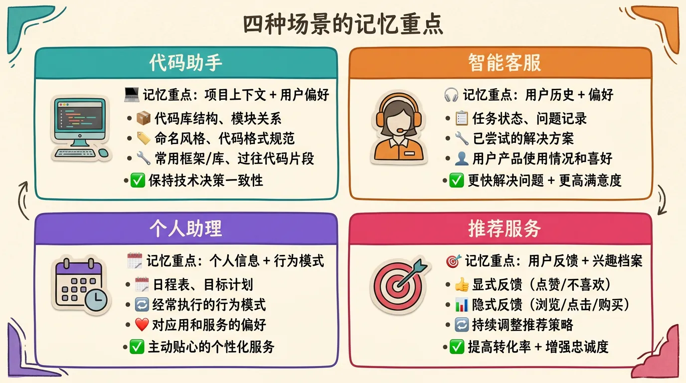
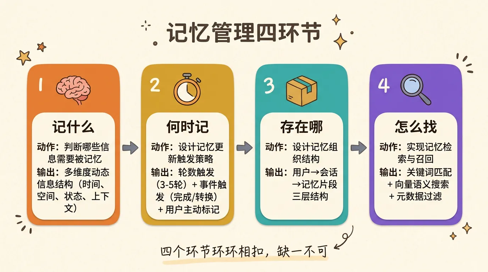
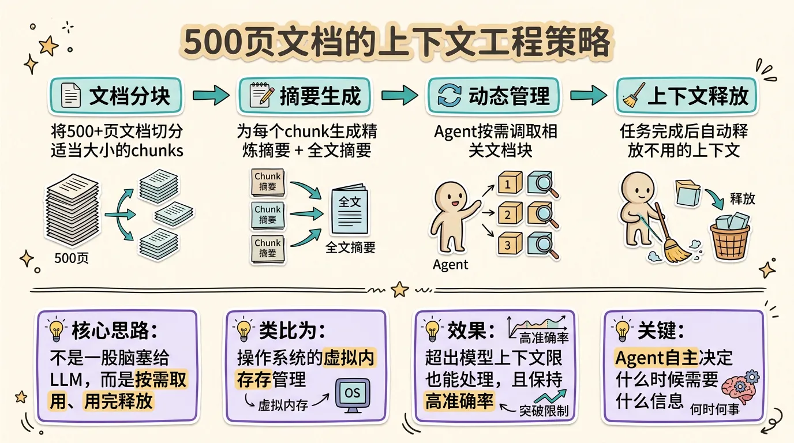
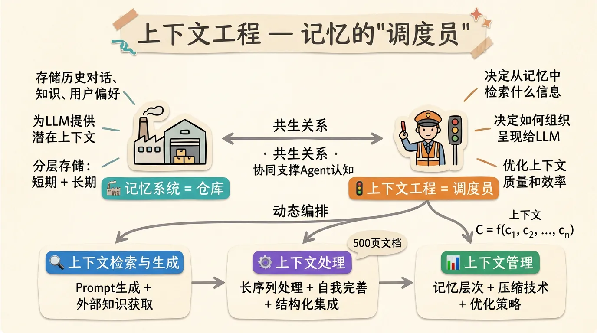
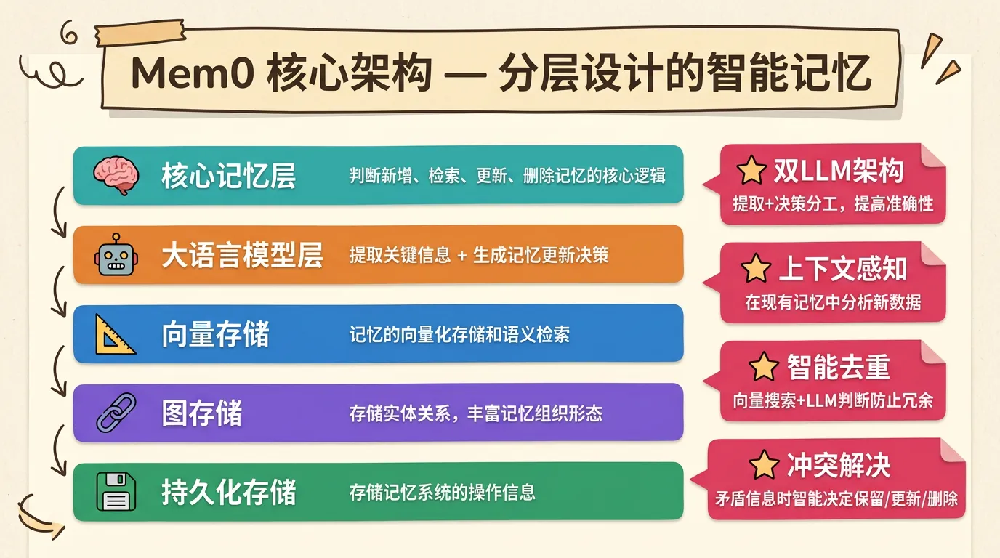
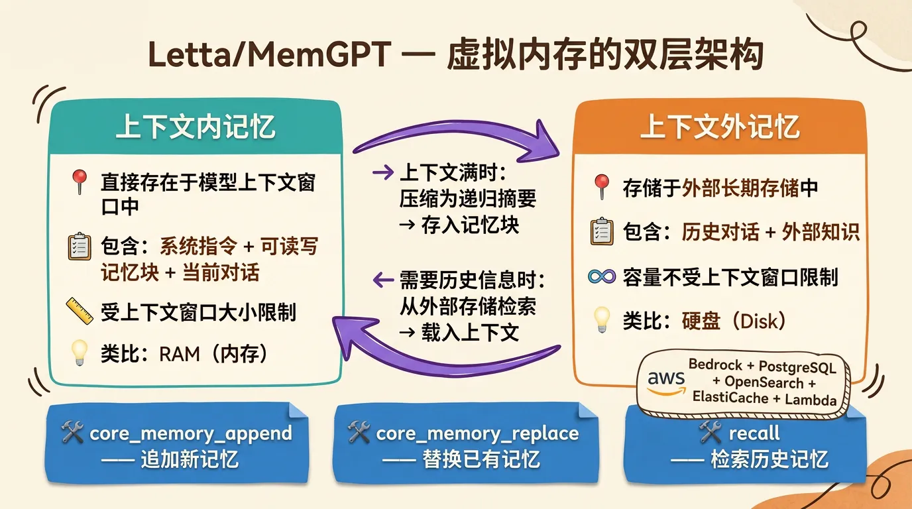
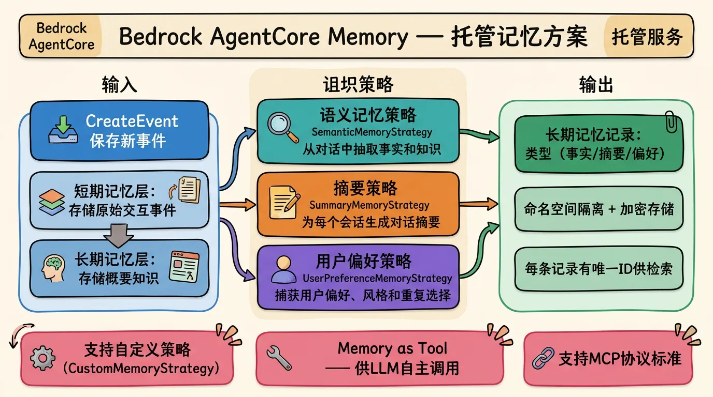
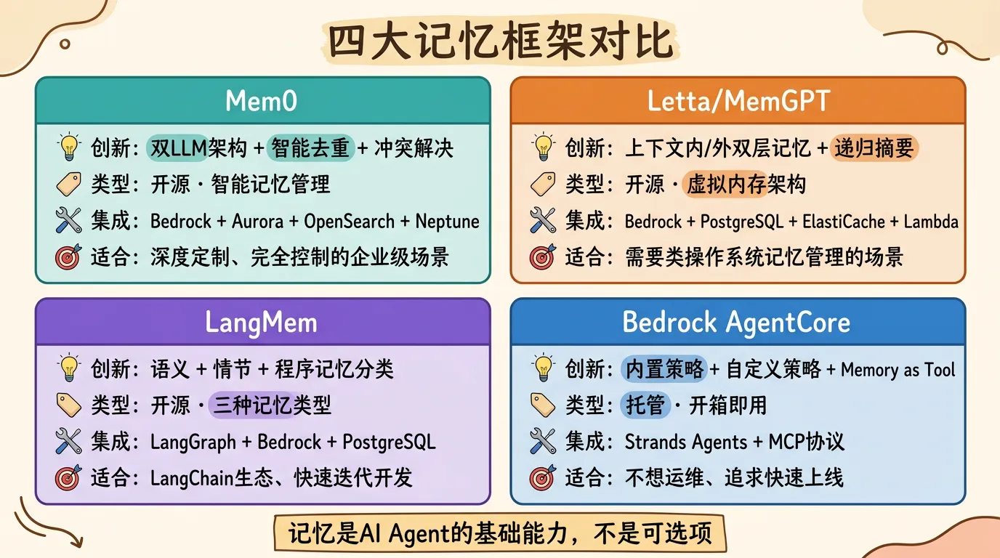

你有没有过这样的体验？
周一跟AI助手说”我喜欢深色主题，代码风格用ESLint Airbnb”，它记住了。周二再问，它还记得。到周三，新开了一个对话窗口，又得重新说一遍。
这就是大语言模型的根本问题——它没有记忆。准确地说，它是无状态（stateless）的。每次对话都是一张白纸，模型本身不会”记住”过去的任何交互。
在简单问答场景下，这不算什么问题。但到了Agent场景，这就成了致命缺陷。一个客服Agent如果记不住用户上周反映过什么问题，每次都从零开始问，用户体验直接拉胯。一个代码助手如果记不住项目的技术栈和代码风格，每次都给你推荐不合适的方案，效率反而更低。
AWS那篇《Agentic AI基础设施实践经验系列（三）：Agent记忆模块的最佳实践》把这个问题讲得比较透彻，从问题分析到解决方案到框架选型，一条线拉下来。我把里面有价值的内容，结合自己的理解，整理成了这篇实践指南。
一、LLM的”遗忘”困境
先说清楚问题有多大。原文从四个角度分析了LLM记忆能力的局限：
上下文窗口有限。 LLM通过一个有限的”上下文窗口”来处理信息，所有输入（包括Prompt和之前的对话片段）都必须塞进这个窗口。一旦信息超出窗口，LLM就”忘记”了，无法再访问。
复杂任务难以追踪。 对于需要跨越多轮对话、追踪状态或执行一系列子任务的复杂任务，LLM很难保持连贯性和进展。特别是在Agent场景中，工具的定义和工具的返回值都会占据上下文空间，同时Agent具有自主工作的能力，和LLM的平均交互轮数也大大增加，这个问题更加严重。
无法个性化。 由于不记住特定用户的历史偏好、习惯或之前的互动，LLM难以提供真正个性化的体验。每次互动都像是第一次见面。
长上下文带来的副作用。 这是最容易被忽略的一点。上下文越长，推理速度越慢、模型检索关键信息的能力可能下降、Token费用也更高。对于需要频繁交互或处理大量文本的应用，这会迅速累积成可观的费用。
所以记忆系统不是锦上添花，是刚需。记忆系统赋予Agent五个核心能力：
- 长期保留与高效管理：存储超出上下文窗口的信息，实现高效检索和过滤
- 持续知识更新：通过存储交互经验，实现自我改进和知识更新
- 个性化服务：记录用户偏好和历史互动，提供定制化回应
- 复杂任务支持：追踪多Agent任务进展和中间结果，确保连贯完成
- 提升交互质量：保持上下文连贯性，支持深入推理，并通过反思机制从错误中学习

二、两种记忆类型：短期 vs 长期
Agent的记忆系统主要分为短期记忆和长期记忆两大类。
2.1 短期记忆（Short-term Memory, STM）
短期记忆是Agent维护当前对话和任务的即时上下文系统，主要包括：
- 会话缓冲（Context）记忆：保留最近对话历史的滚动窗口，确保回答上下文相关性
- 工作记忆：存储当前任务的临时信息，如中间结果、变量值等
短期记忆受限于上下文窗口大小，适用于简单对话和单一任务场景。你把它理解为”脑子里正在想的事情”就行了——容量有限，转瞬即逝。
2.2 长期记忆（Long-term Memory, LTM）
长期记忆是Agent用于跨会话、跨任务长期保存知识的记忆形式。它对应于人类大脑中持久保存的记忆——事实知识、过去经历等。长期记忆的实现通常依赖外部存储或知识库：
- 摘要记忆：将长对话内容提炼为关键摘要存储
- 结构化知识库：使用数据库或知识图谱存储结构化信息
- 向量化存储：通过向量数据库实现基于语义的记忆检索
长期记忆使Agent能够随着时间累积经验和知识，特别适用于知识密集型应用和需要长期个性化的场景。

三、记忆管理四件事
设计Agent的记忆系统，要解决四个核心问题：记什么、何时记、存在哪、怎么找。
3.1 记什么：判断哪些信息需要被记忆
这是第一个也是最关键的问题。并非所有对话内容都需要长期保存。记忆往往是多维度和动态的信息结构，包括时间维度（理解时间依赖的关系和序列）、空间维度（解释基于位置的和几何关系）、参与者状态（跟踪多个实体及其不断变化的状况）、意图上下文（理解目标、动机和隐含的目的），以及文化上下文（在特定社会和文化框架内解释交流）。
原文用四种常见场景举例了各自的记忆重点：
代码助手——记忆用户项目的上下文和偏好。包括代码库结构、命名风格、常用框架/库、以及用户以前提供的代码片段或指令。没有记忆支持时，开发者常常需要重复告诉AI项目的架构或纠正AI偏离项目规范的行为，非常低效。引入持久记忆后，AI能持续参考之前存储的项目背景，”记住”用户的技术栈，保持技术决策的一致性。同时还能记忆用户过往的提问和反馈，下次遇到类似问题直接调用之前的方案。
智能客服——记忆用户历史和偏好。包括用户当前任务状态、提过的问题、故障记录、产品使用情况、服务配置和解决方案记录。用户第二次来询问类似问题时，不必重复描述问题细节，系统能回忆起上次给出的建议或已经尝试过的步骤，直接切入重点。此外，记忆用户的产品使用情况和喜好可以使响应更加贴合用户习惯。
个人助理——记忆用户个人信息和日程表、目标（如健身学习计划）、行为模式（如每周几锻炼）以及对应用和服务的偏好。随着交互增加，持续的长期记忆使Agent能不断适应用户，逐渐减少对用户指令的依赖，实现更主动和贴心的服务。
推荐服务——记忆用户的显式反馈（点赞或明确表达不喜欢）和隐式反馈（浏览记录、点击行为、购买历史），以此构建兴趣档案，持续学习调整推荐策略。

原文还给出了一个非常实用的例子——长文档处理场景中的上下文压缩提示词：
1 | # 文档处理领域的摘要压缩Prompt |
当上下文超过指定限额时，就会触发这个基于LLM的压缩机制。这个思路可以直接用到自己的项目里。
3.2 何时记：记忆更新策略
记忆更新可通过轮数触发或事件触发两种方式：
- 轮数触发：每隔3-5轮对话自动生成摘要存入记忆
- 事件触发：在完成任务、场景转换等关键节点记录信息。比如客服完成问题处理时保存解决方案，个人助理更新日程后写入日历
开发者可以实现监控逻辑，在对话累积或话题转换时，让LLM对近期对话生成摘要，提取关键信息并添加标签便于检索。
系统也可支持用户主动标记需要记住的信息，通过口头指令或界面操作。这不仅让用户指定重要内容，也支持删除特定记忆的需求，确保用户对数据的控制权。
3.3 存在哪：记忆组织结构
记忆数据通常采用用户→会话→记忆片段的三层结构管理：
- 用户层：区分不同账号空间
- 会话层：隔离各对话上下文
- 记忆片段层：存储具体内容及元数据（如时间、关键词、来源等）
复杂系统可能需要维护多个记忆库——短期工作记忆、长期情节记忆、语义知识库等。合理的结构设计有助于快速检索和有效管理记忆内容。
3.4 怎么找：记忆检索与召回
Agent需要基于当前对话意图从记忆库中检索相关信息。主要检索方法包括：
- 关键词匹配：传统的精确或模糊匹配
- 向量语义搜索：通过语义相似度找到最相关的记忆
- 元数据过滤：按时间、来源、类别等属性筛选
系统将检索到的记忆按相关度排序，选取最相关内容加入到对话上下文中，用于生成更准确的响应。

四、上下文工程：记忆的”调度员”
这是原文中一个很有价值的视角——上下文工程（Context Engineering）与记忆系统的关系。
记忆系统和上下文工程形成共生关系，共同支撑Agent的认知能力。打个比方：记忆系统是”仓库”，存储历史对话、知识和用户偏好；上下文工程是”调度员”，决定从仓库中取什么东西、怎么组织、怎么呈现给LLM。
上下文工程的核心在于，LLM的性能根本上取决于它接收的上下文。实现了上下文工程的系统一般包含三类基础组件：
- 上下文检索与生成：涵盖Prompt生成和外部知识获取
- 上下文处理：涉及长序列处理、自我完善和结构化信息集成
- 上下文管理：关注记忆层次、压缩技术和优化策略
用数学化的表述：上下文工程将上下文C重新定义为一组动态结构化的信息组件 c₁, c₂, …, cₙ，这些组件由一组函数进行来源获取、过滤和格式化，最终由高级组装函数A进行编排。
原文还给出了一个实际项目的例子——处理500+页文档的Agent：
输入文档总量超过500页，远超模型的最大Token限制，同时对生成内容的召回率和准确率有较高要求。
他们的上下文工程策略：
- 文档分块处理：将大型文档集合切分为适当大小的chunks
- 摘要生成：为每个文档块生成精炼的文字摘要，并生成整个文档的摘要信息
- 动态上下文管理：赋予Agent自主选择的能力，根据任务需求动态调取相关文档块
- 上下文优化：任务完成后自动释放不再需要的上下文，优化资源利用
这个方法的核心思路是：不是把所有信息一股脑塞给LLM，而是让Agent自己按需取用，用完释放。 像操作系统的虚拟内存一样。


五、四大记忆框架对比
原文从开源框架和商业方案两个角度，对目前主流的Agent记忆方案进行了深度分析。
5.1 Mem0：智能记忆管理
Mem0是专为AI Agent设计的开源记忆框架，通过智能记忆管理帮助Agent实现状态持久化。它支持工作记忆、事实记忆、情景记忆和语义记忆等多种类型，提供智能的LLM提取、过滤和衰减机制，有效降低计算成本。同时支持多模态处理和Graph记忆功能，既可使用托管服务也可自建部署。
架构设计： Mem0包含几个核心模块——核心记忆层、大语言模型层、嵌入模型层、向量存储层、图存储层和持久化存储层。核心记忆层负责判断新增、检索、更新和删除记忆的实现；LLM层负责根据用户输入提取关键信息并生成更新决策；嵌入模型和向量存储层负责记忆的向量化存储和检索；图存储层负责存储抽取出的实体关系，丰富记忆的组织形态。这种分层架构设计确保了可扩展性和可维护性。
几个关键技术创新：
- 双LLM架构：系统通过两次不同的LLM调用实现分工。第一次专注于信息提取，第二次专门处理决策过程，提高准确性并允许专门优化
- 上下文感知处理：在现有记忆上下文中分析新数据，确保记忆系统的一致性和连贯性，防止碎片化
- 智能去重机制：结合向量相似性搜索与LLM判断，防止冗余信息存储
- 冲突解决能力：当出现矛盾信息时，智能确定保留、更新或删除的适当行动
集成方式： 开发者可以通过两种方式集成Mem0——直接调用接口函数（添加、查找、更新记忆等），或将Mem0封装成工具传入Agent框架由Agent自主调用。
与AWS的集成： 支持Amazon Bedrock的多种模型（Claude-3.7-Sonnet用于复杂推理、Titan-Embed-Text-v2用于向量化处理）；向量存储支持Amazon Aurora Serverless V2和Amazon OpenSearch；图数据存储支持Amazon Neptune Analytics；Strands Agent框架中也内置了基于Mem0能力封装的mem0_memory工具。

5.2 Letta（前身为MemGPT）：虚拟内存架构
Letta的设计思路是将LLM代理类比为计算机操作系统，采用”虚拟内存“的概念来管理Agent的记忆。
核心创新在于双层记忆架构：
- 上下文内记忆：直接存在于模型上下文窗口中，包括系统指令、可读写记忆块和当前对话
- 上下文外记忆：存储历史对话和外部知识的长期存储
当上下文窗口接近填满时，系统会自动将对话历史压缩为递归摘要并存储为记忆块，同时保留原始对话供后续检索。通过core_memory_append、core_memory_replace和recall等工具实现记忆的编辑与检索，使Agent能够在长期交互中保持连贯性。
原文给出了一个通过Letta搭建电商客服机器人的完整示例：
- 使用Amazon Bedrock的Claude或Titan模型作为基础LLM
- 采用Amazon PostgreSQL、OpenSearch作为向量存储后端
- 利用ElastiCache缓存来提升推理和问答的效率
- 通过AWS Lambda实现记忆管理的无服务器架构

5.3 LangMem：三种记忆类型
LangMem由LangChain开发，借鉴人类心理学对记忆的分类，为Agent设计了三种核心记忆类型：
- 语义记忆（Semantic Memory）：存储客观事实、用户偏好和基础知识，作为长期持久化记忆嵌入系统提示中。可通过Collection方式保存完整历史信息，或通过Profile方式只保留最新状态
- 情节记忆（Episodic Memory）：捕捉Agent的交互经历，不仅存储对话内容，还包含完整上下文和推理过程。主要用于构建用户提示词，使Agent能从过往经验中学习
- 程序记忆（Procedural Memory）：专注于”如何做”的实操知识，从初始系统提示开始，通过持续反馈和经验积累不断优化
LangMem的高级特性包括主动记忆管理、共享内存机制、命名空间组织和个性化持续进化能力，使AI Agent能根据重要性动态存储信息，支持多个Agent之间的知识共享。
目前LangMem主要与LangGraph集成，支持Amazon Bedrock。记忆存储层面有内置的InMemoryStore用于快速迭代测试，也提供对PostgreSQL的支持。
5.4 Amazon Bedrock AgentCore Memory：托管方案
相比开源框架，亚马逊云科技提供了开箱即用的托管服务。
AgentCore Memory是一个托管的持久化记忆系统，在架构上采用分层存储策略：
- 短期记忆层：存储原始交互事件作为即时上下文
- 长期记忆层：存储从事件中提取的概要知识
短期记忆负责在一次会话中记录最近几轮对话，确保Agent能”记住”当前对话的上下文；长期记忆从对话中提取结构化关键信息，在多个会话之间保留知识，使Agent能够”学习”用户偏好、事实和摘要等信息。
记忆策略： 内置了多种策略来定义如何将原始对话转化为结构化长期记忆：
- SemanticMemoryStrategy（语义记忆策略）：从对话中抽取事实和知识
- SummaryMemoryStrategy（摘要策略）：为每个会话生成对话摘要
- UserPreferenceMemoryStrategy（用户偏好策略）：捕获用户的偏好、风格和重复选择
使用内置策略时，无需额外配置模型，AgentCore Memory服务会在后台使用预置的模型来完成提取和归纳。开发者调用CreateEvent保存新事件后，如果Memory配置了长期记忆策略，服务会异步地对事件内容进行分析（例如调用基础模型）来提炼出可长期保存的知识片段。
长期记忆记录生成后存储于Memory中，对应特定的命名空间和类型（如事实、摘要、偏好），每条记录也有唯一ID以供检索。
AgentCore还允许自定义记忆策略（CustomMemoryStrategy），开发者可提供自定义的提示词和选择特定的基础模型来执行记忆提取。
记忆的使用方式： 通过list_events获取短期记忆的对话记录，通过retrieve_memories查询长期记忆。Memory模块还可以包装成工具供LLM调用——以Strands Agents框架为例，通过AgentCoreMemoryToolProvider将Memory注册为工具，模型需要回忆信息时可以自主调用查询记忆，或将新信息存入记忆。也可以通过MCP等标准让LLM在推理中动态决定何时读写记忆。
所有数据以加密方式存储，使用命名空间进行隔离分区，确保不同应用或用户的记忆数据彼此分隔。


六、我的选型建议
把四个框架消化完之后，说说我的理解：
1. 先想清楚你的场景
代码助手、客服、个人助理、推荐系统，每个场景的记忆重点完全不同。不要上来就选框架，先把”记什么”想清楚。
2. 记忆是基础能力，不是可选项
原文说得好：”我们应将记忆视作AI智能体的基础而非可选项。” 没有记忆的Agent就像一个每天都在失忆的人，再聪明也白搭。
3. 短期+长期搭配使用
光有短期记忆（上下文窗口）不够，对话一长就忘；光有长期记忆也不行，当前任务的临时信息需要有地方放。两者搭配才是完整方案。
4. 不要忽视记忆检索的质量
存进去了不代表找得到。关键词匹配、向量语义搜索、元数据过滤，三种方式各有优劣，实际使用中往往需要组合使用。
5. 上下文工程是记忆的”调度员”
记住信息是第一步，在正确的时间把正确的信息送到LLM面前才是关键。上下文工程做不好，记忆再多也用不上。
6. 框架选型看需求
- 想深度定制、完全控制：选Mem0，灵活度最高，社区活跃
- 需要类操作系统的虚拟内存管理：选Letta/MemGPT，双层记忆架构设计精巧
- 已经在用LangChain/LangGraph生态：选LangMem，集成最顺滑
- 不想运维、追求快速上线：选Bedrock AgentCore Memory，开箱即用
7. 控制成本：压缩和释放
500页文档的例子告诉我们，不是所有信息都要一直留着。分块、摘要、动态调取、用完释放，这些上下文工程策略能有效控制Token消耗。
8. 给用户控制权
支持用户主动标记需要记住的信息，也支持删除特定记忆。记忆是用户数据，用户应该有控制权。
七、写在最后
Agent记忆模块这件事，说简单也简单，说复杂也复杂。
简单的地方在于，核心逻辑就是”存取”二字——把有用的信息存下来，需要的时候取出来用。
复杂的地方在于，”什么是有用的”、”什么时候取”、”怎么取最快最准”这三个问题，每个都需要针对具体场景仔细设计。再加上成本控制、冲突解决、个性化进化这些高级需求，工程复杂度就上来了。
原文最后说了一句话我觉得特别好：**”在Agentic AI的大潮中，拥抱并善用记忆者，才能打造出真正有认知连续性的下一代智能体。”**
没有记忆的Agent只是一个工具，有记忆的Agent才是一个伙伴。